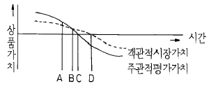
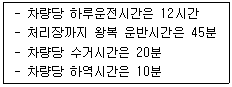
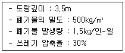
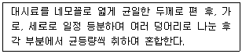
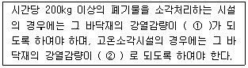

폐기물처리산업기사 (2003-03-16 기출문제)
1과목: 폐기물개론
1. 수분함량이 80％인 슬러지 100m3을 25m3으로 농축하였다면 함수율은? (단, 슬러지의 비중은 항상 1이다.)
- 15％
- 20％
- 25％
- 30％
(정답률: 64%)

2. 적환장 설치장소를 정하는데 고려할 사항과 가장 거리가 먼 것은?
- 사용하고자 하는 적환작업의 종류를 고려한 곳
- 수거하고자 하는 개별적 고형물 발생지역의 하중중심에 되도록 가까운 곳
- 주요 간선도로에 쉽게 도달할 수 있는 곳인 동시에 2차적 또는 보조 수송수단에 가까운 곳
- 적환작업중에 공중 및 환경피해가 최소인 곳
(정답률: 알수없음)
3. 다음 내용 중 적당치 않은 것은?
- 생활수준이 높을수록 쓰레기 발생량은 증가하지만 그 영향은 크지 않다.
- 수거빈도가 잦거나 쓰레기통이 크기가 크면 쓰레기의 발생량이 감소한다.
- 도시의 규모나 인구의 밀도가 증가하면 쓰레기 발생량도 증가하는 경향이 있다.
- 우리나라는 선진국에 비해 생활폐기물중 음식물쓰레기 함량이 높다.
(정답률: 알수없음)
4. 다음 중 쓰레기 저위발열량을 추정하기 위한 방법으로 알맞지 않은 것은?
- kick식에 의한 방법
- 단열열량계에 의한 방법
- 추정식에 의한 방법
- 원소분석에 의한 방법
(정답률: 알수없음)
5. S지역의 인구는 20,000명이고 분뇨발생량은 0.9ℓ/인·일이다. 이 지역에서 발생하는 분뇨를 수거하는데 1일 수거용량이 4.5kℓ 인 수거차가 하루에 3대 필요하다면 이 지역에서의 분뇨 수거율은 몇 ％인가?
- 55％
- 65％
- 75％
- 85％
(정답률: 알수없음)
6. 쓰레기와 하수처리장에서 얻어진 슬러지를 함께 매립 하려 한다. 쓰레기와 슬러지의 함수율은 각각 60%와 90%라 한다. 쓰레기와 슬러지를 중량비로 9 : 1 비율로 섞을 때 혼합체의 함수율은?
- 63%
- 69%
- 71%
- 74%
(정답률: 알수없음)
7. 시간에 따른 객관적 시장가치와 소비자의 주관적 평가 가치를 나타낸 그림에서 재이용 가치가 없는 완전한 폐기물로 발생 되는 시점은?

- A
- B
- C
- D
(정답률: 알수없음)
8. 다음중 지정폐기물인 중금속 함유 슬러지의 적정처리방법은?
- 위생매립
- 고형화후 안전매립
- 소각 및 에너지회수
- 유효물질회수 후 토지개량제로 살포
(정답률: 알수없음)
9. 폐기물의 총고정 탄소량이 강열감량의 50% 이다. 이 폐기물의 초기 함수율이 70%이고 강열감량분이 건조고형물의 60%라면 총고정 탄소량의 무게는 몇 kg 인가? (단, 초기폐기물의 무게 : 1000kg ,고형물 비중 : 1.0 )
- 180kg
- 120kg
- 90kg
- 60kg
(정답률: 알수없음)
10. 폐기물을 압축시킨 결과 용적감소율이 45%인 경우 압축비는 얼마인가?
- 2.22
- 1.82
- 4.5
- 0.45
(정답률: 알수없음)
11. A, B, C 세가지 물질로 구성된 쓰레기 시료를 채취하여 분석한 결과 함수율이 55%인 A물질이 35% 발생되고, 함수율 5%인 B물질이 60%발생되었다. 나머지 C물질은 함수율이 10%인 것으로 나타났다면 전체 쓰레기의 함수율은?
- 15.54%
- 22.75%
- 32.57%
- 45.35%
(정답률: 알수없음)
12. 년간 폐기물 발생량이 5,000,000톤인 지역에서 1일 평균수거인부가 4,000명이 소요되었으며, 1일 작업시간이 평균 8시간일 경우 MHT은?
- 2.34
- 1.82
- 1.56
- 1.04
(정답률: 알수없음)
13. 다음 중 폐기물이 가지고 있는 특성을 중심으로 위해성을 판단하는 인자로 볼 수 없는 것은?
- 부식성
- 부패성
- 반응성 또는 인화성
- 용출특성
(정답률: 알수없음)
14. 유기성물질로 부터 에너지 회수에 관한 내용 중 수소가 많은 압력상태에서 열분해시켜 액체연료를 생산하는 방법은?
- Hydrogenation
- Hydrogasfication
- Wet oxidation
- Gasfication
(정답률: 50%)
15. 인구 70만 도시의 쓰레기 발생량이 1.5kg/인·일 이고, 이 도시의 쓰레기 수거율은 90%이다. 적재용량이 10ton인 수거차량으로 수거한다면 하루에 몇 대로 운반해야 하는가?

- 10대
- 8대
- 6대
- 4대
(정답률: 알수없음)
16. 현재 우리나라에서 발생되는 생활폐기물의 처리방법 중 가장 많이 사용되는 공법은?
- 소각
- 매립
- 노천폐기
- 퇴비화
(정답률: 알수없음)
17. 폐기물의 발생량 조사방법중 '전수조사'의 장점이 아닌 것은?
- 조사기간이 짧다.
- 표본치의 보정역할이 가능하다.
- 행정시책에 대한 이용도가 높다.
- 표본오차가 작아 신뢰도가 높다.
(정답률: 알수없음)
18. 생활쓰레기 수거형태 중 효율이 가장 좋은 방식은?
- 문전수거
- 집안이동수거
- 타종수거
- 노변수거
(정답률: 알수없음)
19. 물질회수를 위한 저온파쇄에 대한 설명이다 다음 중 옳지 않은 것은?
- 복합재의 재질별 파쇄에 유리하다.
- 냉각제로는 액체질소의 사용이 보편화되어 있다.
- 폐타이어의 분쇄에 이용 가능하다.
- 주로 전단파쇄기와 충격파쇄기가 사용된다.
(정답률: 알수없음)
20. 폐기물 연소시 발열량을 계산하기 위한 Dulong식과 관계없는 항목은?
- S
- N
- H
- C
(정답률: 알수없음)
2과목: 폐기물처리기술
21. 인구가 150,000명인 도시에서 발생한 폐기물을 압축하여 도랑식 위생매립방법으로 처리하고자 한다. 1년동안 매립에 필요한 매립지의 부지면적은?

- 32850m2
- 22975m2
- 18425m2
- 14080m2
(정답률: 알수없음)
22. 작업과 접합이 용이하고 강도가 높으며 가격이 저렴한 반면 자외선, 오존, 기후와 대부분의 유기화합물에 약한 합성차수막은?
- PVC
- HDPE
- LDPE
- CR
(정답률: 알수없음)
23. 퇴비화의 한 방법으로 분뇨와 도시가정 쓰레기를 혼합하여 퇴비화하려고 한다. 이때의 장점으로 틀린 것은?
- 퇴비화시 생기는 고온성 박테리아 생성의 한계조절이 가능하다.
- 퇴비화에 필요한 함수율 조정이 가능하다.
- C/N비의 조정이 가능하다.
- 퇴비화에 필요한 부족성분의 보완이 가능하다.
(정답률: 알수없음)
24. COD/TOC ＞ 2.8, BOD/COD ＞ 0.5인 매립지에서 발생하는 침출수의 처리에 가장 효과적이며 경제적인 처리방법은?
- 생물학적 처리
- 이온교환수지
- 활성탄흡착
- 화학적산화
(정답률: 알수없음)
25. 고형화처리 중 시멘트기초법에서 가장 흔히 사용되는 보통 포틀랜드시멘트의 주성분은?
- CaO, SiO2
- Al2O3, Fe2O3
- CaO, Al2O3,
- SiO2, Fe2O3
(정답률: 알수없음)
26. 폐기물 고화처리시 고화재의 종류에 따라 무기적 방법과 유기적 방법으로 나눌 수 있다. 유기성 고형화에 관한 설명으로 틀린 것은?
- 수밀성이 매우 크며 다양한 폐기물에 적용할 수 있다
- 최종 고화체의 체적 증가가 다양하다.
- 미생물, 자외선에 대한 안정성이 양호하다.
- 폐기물의 특정성분에 의한 중합체 구조의 장기적인 약화 가능성이 있다.
(정답률: 알수없음)
27. 다음 차수막공법중 연직차수막에 해당되지 않는 것은?
- 강널말뚝
- 어스라이닝
- Grout공법
- 어스댐의 코아
(정답률: 알수없음)
28. 다음 폐기물중 C/N 비가 가장 큰 물질은?
- 톱밥
- 목초
- 낙엽
- 가축분뇨
(정답률: 알수없음)
29. 퇴비화기술에 대한 설명과 거리가 먼 것은?
- 퇴비화를 정상적으로 유도하기 위해서는 배기가스의 산소농도가 15% 수준을 유지하여야 한다.
- 유기성폐기물이 대상이며 함수율이 60% 전후인 원료가 적합하다.
- 분해를 위해서는 대상원료별 적합한 탄질소비를 맞추어 주는 것이 필요하다.
- 통기개량제는 톱밥등을 사용하며 수분조절, 탄질소비 조절기능을 겸한다.
(정답률: 알수없음)
30. 코오크스 또는 분해연소가 끝난 석탄 자체가 연소하는 과정으로 연소되면 적열(赤熱)할 뿐 화염이 없는 연소는?
- 증발연소
- 표면연소
- 내부연소
- 자기연소
(정답률: 알수없음)
31. 혐기성 소화조에서 독성을 유발하여 가스화가 억제될 수 있는 농도로 가장 적절한 것은?
- Ca : 3000mg/ℓ
- Na : 3000mg/ℓ
- K : 3000mg/ℓ
- NH4 : 1000mg/ℓ
(정답률: 알수없음)
32. 유기성 폐기물 퇴비화의 단점이라 할 수 없는 것은?
- 낮은 비료가치
- 부지선정의 어려움
- 퇴비화 과정중 외부 가온
- 악취발생 가능성
(정답률: 알수없음)
33. 연료가 완전연소시 이론공기량을 Ao, 실제공기량을 A라고 할 때 과잉공기계수 m을 구하는 식으로 옳은 것은 ?
- A / AO
- AO / A
- A - AO
- A · AO
(정답률: 알수없음)
34. 분뇨처리장 1차 침전지에서 1일 슬러지의 제거량이 50m3/day이고 SS농도가 20,000mg/ℓ이었으며 이를 원심분리기에 의하여 탈수시켰을때 탈수 슬러지의 함수율은 80%이었다면 탈수된 슬러지양은? (단, 원심분리기의 SS회수율은 100%, 비중은 1.0 가정)
- 3ton/day
- 5ton/day
- 8ton/day
- 10ton/day
(정답률: 알수없음)
35. 매립지를 조성할 때 지하수 오염이나 토양오염을 방지하기 위해 차수설비를 한다. 차수설비 재료로 적합하지 않은 것은?
- 점토
- 모래
- 벤토나이트
- 시멘트
(정답률: 알수없음)
36. 유해폐기물의 고화처리방법 중에서 열가소성플라스틱법의 장점이 아닌 것은?
- 용출손실률은 시멘트 기초법에 비해 상당히 낮다.
- 대부분의 매트릭스 물질은 수용액의 침투에 저항성이 매우 크다.
- 고화처리된 폐기물성분을 나중에 회수하여 재활용 할 수 있다.
- 혼합률이 비교적 낮으며 에너지요구량이 적다.
(정답률: 알수없음)
37. 침출수를 혐기성 공정으로 처리하는 경우, 장점이라 볼 수 없는 것은?
- 고농도의 침출수를 희석없이 처리할 수 있다.
- 중금속에 의한 저해효과가 호기성 공정에 비해 적다.
- 대부분의 염소계 화합물은 혐기성상태에서 분해가 잘 일어나므로 난분해성 물질을 함유한 침출수의 처리시 효과적이다.
- 호기성 공정에 비해 낮은 영양물 요구량을 가지므로 인(P) 부족현상을 일으킬 가능성이 적다.
(정답률: 알수없음)
38. 다음 탈수기중에서 다단의 압축롤에 의하여 압축력을 가하면서 수분을 제거하는 방법은?
- 가압탈수
- 진공탈수
- Belt Press
- 원심분리탈수
(정답률: 알수없음)
39. 매립시 연직차수막에 관한 설명으로 알맞지 않은 것은?
- 지중에 수평방향의 차수층이 존재하는 경우 채용한다.
- 지하에 매설하기 때문에 차수성 확인이 어렵다.
- 지하수 집배수시설이 불필요하다.
- 지중이기 때문에 차수막 보강시공이 불가능하다.
(정답률: 알수없음)
40. 다음은 매립방법을 구조적 측면으로 분류한 것이다. 매립지에서 발생되는 침출수를 강제적으로 배제함으로서 호기상태를 유지하는 방법은?
- 준호기성 매립구조
- 호기성 매립구조
- 개량형 호기성 매립구조
- 호기성 위생매립구조
(정답률: 알수없음)
3과목: 폐기물 공정시험 기준(방법)
41. 수분측정시 건조기에서의 건조시간과 건조온도로 적합한 것은?
- 4시간, 1⑤-110℃
- 3시간, 1⑤-110℃
- 2시간, 1⑤± 5℃
- 1시간, 1⑤± 5℃
(정답률: 알수없음)
42. 기름성분을 분석하기 위한 노말헥산 추출시험법에서 노말헥산을 증발시키기 위한 적용온도는?
- 60℃
- 80℃
- 90℃
- 100℃
(정답률: 알수없음)
43. 다음 중 폐기물의 수소이온농도를 구하기 위하여 사용되는 pH미터에 관한 설명으로 알맞는 것은?
- pH미터는 pH표준액에 대해 10회 되풀이 하여 측정하였을 때 그 재현성이 ± 0.⑤이내의 것을 사용한다.
- pH미터는 pH표준액에 대해 10회 되풀이 하여 측정하였을 때 그 재현성이 ± 0.1이내의 것을 사용한다.
- pH미터는 pH표준액에 대해 5회 되풀이 하여 측정하였을 때 그 재현성이 ± 0.⑤이내의 것을 사용한다.
- pH미터는 pH표준액에 대해 5회 되풀이 하여 측정하였을 때 그 재현성이 ± 0.1이내의 것을 사용한다.
(정답률: 알수없음)
44. 다음의 설명은 대시료의 축소방법 중 어느 방법에 대한 설명인가?

- 구획법
- 면적법
- 교호삽법
- 원추 4분법
(정답률: 알수없음)
45. 이온전극중 고체막 전극으로 측정할 수 없는 이온은?
- NH4+
- K+
- Cl-
- NO3-
(정답률: 알수없음)
46. 휘발성 유기물질 중 트리할로메탄(THMs)을 분석하고자 한다. 다음 중 THMs 성분이 아닌 것은?
- CHCl3
- CHCl2
- CHCl2Br
- CHClBr2
(정답률: 알수없음)
47. 대형의 콘크리트 고형물의 시료채취에 관한 사항이다. 분쇄하기 어려울 경우, 임의로 몇 개소를 파쇄하여 채취하면 가장 적절한가?
- 2 개소
- 5 개소
- 8 개소
- 10 개소
(정답률: 알수없음)
48. 다음중 원자흡광 분석에 일어나는 간섭이 아닌 것은?
- 기계적간섭
- 분광학적간섭
- 물리적간섭
- 화학적간섭
(정답률: 알수없음)
49. 천분율 농도표시 기호로 알맞은 것은?
- ㎎/L
- ㎎/㎏
- ㎍/㎏
- ‰
(정답률: 알수없음)
50. 흡광광도분석법에서 사용하는 흡수셀에 대한 설명 중 적절하지 못한 것은?
- 플라스틱제는 근자외부 파장범위에 사용
- 가시부 및 근적외부에서는 주로 유리제 사용
- 일반적으로 사각형 또는 시험관형 사용
- 석영제는 자외선 파장범위에 사용
(정답률: 알수없음)
51. 다음은 원자흡광광도법에 의한 비소 정량에 관한 설명이다. 이중 잘못된 것은?
- 염화제일주석으로 시료중의 비소를 3가 비소로 환원한다.
- 아연을 넣으면 비화수소가 발생한다.
- 연소가스는 알곤-수소가스를 사용한다.
- 운반가스는 질소가스를 사용한다.
(정답률: 알수없음)
52. 가스크로마토그래피의 분리관에 사용되는 고정상 액체의 선택시 고려해야 하는 사항이다. 잘못 설명된 것은?
- 담체와 화학적으로 활성이 있어야 한다.
- 사용온도에서 증기압이 낮고 점성이 적어야 한다.
- 화학적으로 안정된 것이어야 한다.
- 화학적 성분이 일정한 것이어야 한다.
(정답률: 알수없음)
53. 가스크로마토그래프법에 의한 유기인 분석에 관한 설명으로 잘못된 것은?
- 시료의 추출을 위하여 크로마토그래프용 노말헥산을 사용한다.
- 검출기는 열전도도 검출기(TCD)를 사용한다.
- 농축장치로는 구데르나다니쉬형농축기 또는 회전증발 농축기를 사용한다.
- 운반가스는 질소 또는 헬륨을 사용하여 유기인 화합물이 3∼30분간에 유출될 수 있도록 유량을 조절한다
(정답률: 알수없음)
54. 용출장치에서 사용되는 진탕기의 진탕횟수로 적절한 것은?
- 매분당 약 60회
- 매분당 약 120회
- 매분당 약 200회
- 매분당 약 300회
(정답률: 알수없음)
55. 납(Pb)의 원자흡광광도법 측정방법 내용중 틀린 것은?
- 표준편차는 1 ~ 5%이다
- 유효 측정농도는 0.04mg/ℓ 이상이다
- 정량범위는 283.3nm에서 1 ~ 20mg/ℓ 이다
- 불꽃을 만들기 위한 가연성가스 – 조연성가스는 아세틸렌 - 공기를 사용한다
(정답률: 알수없음)
56. 가스크로마토그래피 분석시 잡음신호(noise)의 몇 배를 검출한계로 나타내는가?
- 2배
- 4배
- 6배
- 8배
(정답률: 알수없음)
57. 폐기물 시료 100g을 건조하고 방냉후 시료질량이 12g 이었다면 다음 중 무엇에 해당하는가? (단, 항량이 될 때까지 건조)
- 액상 폐기물
- 반고상 폐기물
- 고상 폐기물
- 고형특정 폐기물
(정답률: 알수없음)
58. 가스크로마토 그래피분석에 사용하는 검출기중 방사선 동위원소(63Ni, 3H 등)를 이용하여 시료중의 할로겐화합물, 니트로화합물등을 선택적으로 검출하는 것은?
- 열전도 검출기(TCD)
- 수소염 이온화 검출기(FID)
- 전자 포획형 검출기(ECD)
- 염광광도형 검출기(FPD)
(정답률: 알수없음)
59. 총칙에서 규정하고 있는 사항중 올바르게 표시된 것은?
- '약'이라 함은 기재된 양에 대하여 ± 5% 이상의 차가 있어서는 안된다.
- 방울수라 함은 25℃에서 정제수 20방울을 적하할 때 그 부피가 약 1㎖되는 것을 말한다.
- '감압 또는 진공'이라 함은 5mmHg 이하를 말한다.
- '냄새가 없다'라고 기재한 것은 냄새가 없거나 또는 거의 없는 것을 표시하는 것이다.
(정답률: 알수없음)
60. 원자흡광광도법에서 검량선 작성시, 그 측정치가 흩어져 상쇄하기 쉬우므로 분석값의 재현성이 높아지고 정밀도가 향상되는 방법은?
- 검량선법
- 표준 첨가법
- 내부 표준법
- 외부 표준법
(정답률: 알수없음)
4과목: 폐기물 관계 법규
61. 지정폐기물의 처리를 위탁받은 자가 지정폐기물을 처리할 수 없게 된 경우 위탁자에게 몇 일 이내에 통보하여야 하는가?
- 지정폐기물을 처리할 수 없게 된 날부터 15일 이내
- 지정폐기물을 처리할 수 없게 된 날부터 10일 이내
- 지정폐기물을 처리할 수 없게 된 날부터 7일 이내
- 지정폐기물을 처리할 수 없게 된 날부터 5일 이내
(정답률: 알수없음)
62. 폐기물처리업자, 폐기물처리시설을 설치, 운영하는 자 등이 환경부령이 정하는 바에 따라 장부를 비치하고, 폐기물의 수집, 운반, 처리상황 등을 기록하여 최종기재한 날부터 얼마 동안 보존하여야 하는가
- 6개월
- 1년
- 2년
- 3년
(정답률: 알수없음)
63. 폐기물관리법상 지정폐기물 보관장소에는 표지판을 설치하여야 한다. 표지판의 색깔로 적절한 것은? (단, 감염성폐기물 제외)
- 황색바탕에 백색선 및 백색글자
- 적색바탕에 백색선 및 백색글자
- 황색바탕에 흑색선 및 흑색글자
- 적색바탕에 흑색선 및 흑색글자
(정답률: 알수없음)
64. 다음 중 폐기물관리법령에서 규정하고 있는 일반소각시설의 연소실 출구온도는? (단, 감염성폐기물 대상 아님)
- 섭씨 750도 이상
- 섭씨 850도 이상
- 섭씨 1,100도 이상
- 섭씨 1,200도 이상
(정답률: 알수없음)
65. 폐기물관리법에서 사업장폐기물을 배출하는 사업장 범위기준으로 적절한 것은?
- 폐기물을 1회 평균 200㎏이상을 배출하는 사업장
- 지정폐기물을 배출하는 사업장
- 폐기물을 1일 평균 200㎏이상을 배출하는 사업장
- 폐기물을 일련의 공사,작업 등으로 인하여 3톤 이상을 배출하는 사업장
(정답률: 알수없음)
66. 폐기물처리시설의 사용을 종료하거나 폐쇄하고자 하는 자는 그 시설의 사용종료일 또는 사용폐쇄일 몇 월 이전에 사용종료, 폐쇄신고서를 제출하여야 하는가? (단, 매립시설일 경우)
- 1개월
- 2개월
- 3개월
- 6개월
(정답률: 60%)
67. 환경부장관 또는 시· 도지사가 영업구역을 제한하는 조건을 붙일 수 있는 경우는?
- 생활폐기물 수집· 운반업 허가시
- 폐기물 중간처리업 허가시
- 지정폐기물 수집· 운반업 허가시
- 사업장 폐기물 종합처리업 허가시
(정답률: 알수없음)
68. 폐기물관리법에서는 폐기물처리담당자등은 일정교육기관에서 실시하는 법정보수교육을 받도록 하고 있다. 이에 대한 내용으로 알맞지 않는 것은?
- 교육기관의 장은 매 교육과정종료후 7일이내에 교육결과를 교육대상자를 선발하여 통보한 기관의 장에게 통보하여야 한다.
- 교육기관은 환경공무원교육원, 환경관리공단, 환경보전협회이다.
- 교육과정은 사업장폐기물배출자과정, 폐기물처리업 기술요원과정, 폐기물재활용신고자과정 등이 있다.
- 교육기간은 3일 이내이다.
(정답률: 알수없음)
69. 생활폐기물 처리시설 중 기술관리인을 두어야 할 매립시설의 규모기준으로 적절한 것은?
- 면적이 5000m2이상
- 면적이 10000m2이상
- 매립용적이 5000m3이상
- 매립용적이 10000m3이상
(정답률: 알수없음)
70. 사업장폐기물배출자등은 매년의 폐기물의 발생졺처리 및 재활용에 관한 사항을 언제까지 제출해야 하나?
- 당해 12월말까지
- 다음연도 1월말까지
- 다음연도 2월말까지
- 다음연도 3월말까지
(정답률: 알수없음)
71. 폐쇄명령을 이행하지 아니한 자에 대한 벌칙기준으로 적절한 것은?
- 5년 이하의 징역 또는 3천만원 이하의 벌금
- 3년 이하의 징역 또는 2천만원 이하의 벌금
- 2년 이하의 징역 또는 1천만원 이하의 벌금
- 6월 이하의 징역 또는 500만원 이하의 벌금
(정답률: 알수없음)
72. 환경부장관, 시· 도지사 또는 시장, 군수, 구청장이 광역폐기물 처리시설의 설치 또는 운영을 위탁할 수 있는자에 해당되지 않는 자는?
- 환경관리공단
- 지방자치법에 의한 지방자치단체 조합으로서 폐기물의 광역처리를 위하여 설립된 조합
- 한국자원재생공사
- 당해 광역폐기물처리시설을 시공한 자(당해 시설의 운영위탁의 경우에 한함)
(정답률: 알수없음)
73. 매립시설에서 발생되는 침출수의 배출허용기준으로 알맞은 것은? (단, 나지역, COD는 중크롬산칼륨법을 기준, 단위는 mg/L, 중크롬산칼륨법 COD에서 ( )는 처리효율 )(순서대로 BOD - COD – SS)
- 120 - 600(80%) - 120
- 100 - 600(80%) - 100
- 70 - 800(80%) - 70
- 50 - 800(80%) - 50
(정답률: 알수없음)
74. ( )안에 알맞은 것은?

- ① 5% 이상, ② 10% 이상
- ① 10% 이상, ② 5% 이상
- ① 5% 이하, ② 10% 이하
- ① 10% 이하, ② 5% 이하
(정답률: 알수없음)
75. 폐기물관리법상의 과징금처분에 대한 설명 중 틀린 것은?
- 과징금처분을 하기 위해서는 영업의 정지가 당해 영업의 이용자 등에게 심한 불편을 주거나 공익을 해할 우려가 있다고 인정되어야 한다.
- 과징금을 납부하지 아니한 때에는 국세체납처분 또는 지방세 체납처분의 예에 의하여 각각 이를 징수한다.
- 영업의 정지에 갈음하여 부과되는 과징금의 액수는 최고 1억원이다.
- 과징금을 부과하는 위반행위의 종별과 정도에 따른 과징금의 금액 및 기타 필요한 사항은 환경부령으로 정한다.
(정답률: 알수없음)
76. 지정 폐기물에 관한 설명으로 알맞지 않은 것은?
- 폐농약 : 농약의 제조, 판매업소에서 발생되는 것에 한한다.
- 폐알카리 : pH 12.5 이상의 액체상태 폐기물인 것에 한한다.(수산화칼륨 및 수산화나트륨 포함)
- 광재 : 환경부령이 정하는 물질을 함유한 것에 한하며 철광원석의 사용으로 인한 고로슬래그는 제외한다.
- PCB함유 폐기물 : 액체상태의 것으로 용출액 1리터당 0.03밀리그램이상 함유한 것에 한한다.
(정답률: 알수없음)
77. 사후관리 이행 보증금의 사전적립대상이 되는 폐기물을 매립하는 시설은 면적이 얼마이상이어야 하는가?
- 3천 300m2
- 5천 500m2
- 1만 m2
- 3만 m2
(정답률: 알수없음)
78. 사후관리 대상인 폐기물을 매립한 후 몇 년간 토지이용을 제한하는가?
- 1년이내
- 5년이내
- 10년이내
- 20년이내
(정답률: 알수없음)
79. 감염성폐기물은 종류별로 전용용기에 넣어 보관하여야 되는데, 그 용기에 표시하는 도형 색상이 틀리는 것은?
- 인체조직물등 태반 : 적색
- 혼합감염성폐기물 : 오렌지색
- 병리계폐기물 : 청색
- 기타 조직물류 : 적색
(정답률: 알수없음)
80. 다음중 폐기물 중간처리시설중 기계적 처리시설에 속하는 것은?
- 고형화시설
- 연료화시설
- 소멸화시설
- 응집, 침전시설
(정답률: 알수없음)
농축 후에는 슬러지의 양은 25m3이므로, 슬러지의 양은 25톤이다. 이 중에 수분의 양은 변함없이 80톤이다.
따라서, 농축 전에는 슬러지의 총 무게가 100톤이고, 그 중 수분이 차지하는 비중이 80%이므로 수분의 무게는 80톤이다.
농축 후에는 슬러지의 총 무게가 25톤이고, 그 중 수분이 차지하는 비중이 80/25 = 3.2배이므로 수분의 무게는 80/3.2 = 25톤이다.
따라서, 농축 전에 비해 수분의 무게가 변함없이 80톤이지만, 슬러지의 총 무게가 100톤에서 25톤으로 줄어들었으므로, 농축 후의 함수율은 25/100 × 100% = 25%가 아니라, 25/100 × 80/100 × 100% = 20%이다.
즉, 슬러지의 총 무게가 줄어들면서 수분의 비중이 높아져서, 농축 전에 비해 더 많은 수분이 포함되어 있게 되므로, 함수율이 더 낮아진다.